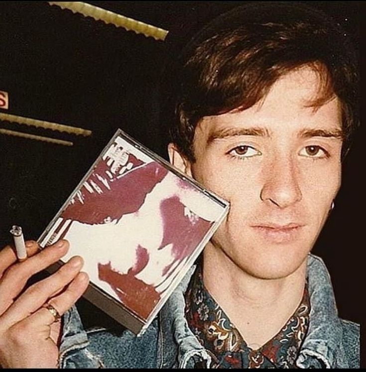

Johnny Marr

| Birth Name: |
John Martin Maher |
| Born: |
31 October 1963 (age 58) |
| Origin: |
Manchester, England |
| Occupation: |
Musician, songwriter, singer |
| Instruments: |
Guitar, vocals |
| Years Active: |
1980–present |
| Labels: |
Warner Bros., Sire, Rough Trade™, Island, Polydor, New Voodoo |
| Associated Acts: |
The Smiths, Electronic, Modest Mouse, The Cribs |
John Martin Marr (born 31 October 1963) is an English musician, songwriter and singer. He first achieved fame as the guitarist and co-songwriter of the
Smiths, who were active from 1982 to 1987. He has since performed with numerous other bands and embarked on a solo career.
Born and raised in Manchester, England, Marr formed his first band at the age of 13. He was part of several bands with Andy Rourke before forming the
Smiths with Morrissey in 1982. The Smiths attained commercial success and were critically acclaimed, with Marr's jangle pop guitar style becoming a
distinctive part of the band's sound, but separated in 1987 due to personal differences between Marr and Morrissey. Since then, Marr has been a member
of the Pretenders, the The, Electronic, Modest Mouse, and the Cribs, and he has become a prolific session musician, working with names such as Kirsty
MacColl, Pet Shop Boys, Talking Heads, Bryan Ferry and Hans Zimmer.
Having released an album titled Boomslang in 2003 under the name Johnny Marr and the Healers, Marr released his first solo album, The Messenger, in 2013.
His second solo album, Playland, was released in 2014, followed by a third, Call the Comet, in 2018. Marr's autobiography, Set the Boy Free, was published
in 2016.
Described by Alexis Petridis of The Guardian as "the 1980s' most inventive and distinctive guitarist", Marr was voted the fourth-best guitarist of the last
30 years in a poll conducted by the BBC in 2010. Phil Alexander, editor-in-chief of Mojo, described him as "arguably Britain's last great guitar stylist".
In 2013, NME honoured Marr with its "Godlike Genius" award.